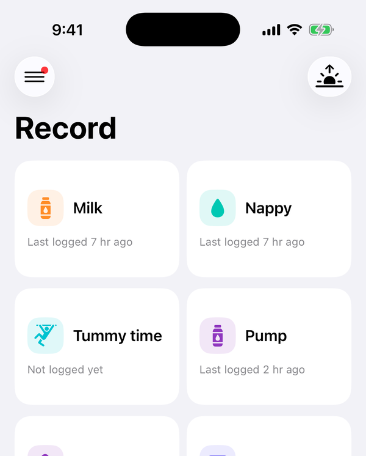
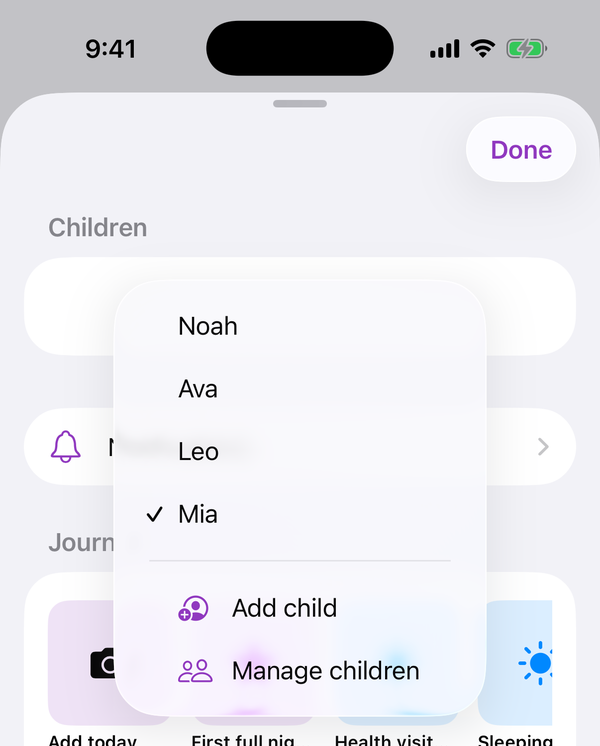

Tiny Logger is a free baby tracker and family care app for
iPhone and iPad. Log feeds, sleep, nappies, pumping, growth
and health records for each child, privately.
Keep each child’s records together and see what’s likely next,
without turning family life into a spreadsheet.
Nappies, your health visitor and the Red Book, NHS sleep guidance and
the NHS vaccination schedule. Switch your region to the US and it uses
CDC guidance and US words instead.
Log feeds, sleep and nappies in a few taps.
Breastfeeding with left and right sides, bottles, pumping, sleep,
awake windows, nappies, solids, vitamins, tummy time and growth.
Start a timer from the Lock Screen or a widget, even one-handed at
night, then get back to your baby.

A separate record for each child, and the whole family in sync.
Twins and siblings each get their own profile, so their logs never
mix. Invite a partner, grandparents or a nanny through private
iCloud sharing, and choose what each person can see and edit.

Medicines, allergies, vaccinations and appointments in one place.
Follow the vaccination schedule with reminders, keep medicines and
allergies together, and note questions before an appointment. Export
a PDF health summary to show your GP or health visitor.
Widgets and Live Activities for timers on the Lock Screen
Siri Shortcuts for logging hands-free
Apple Health, optional and read-only
A private journal for photos, videos and firsts
Market, optional ideas for essentials and things to do. Some links earn a commission.
Your family’s information stays under your control.
Records stay on your devices and in your own iCloud. You choose who
sees them, and your data is never sold. Tiny Logger is not a medical
or emergency service.